A collection of self-contained examples to use for learning and inspiration.
The following code examples demonstrate how to build Kinoma applications using XML and JavaScript. Each example is a complete application that can be imported into Kinoma Studio and run in the built-in simulator or exported as a standalone native application for iOS or Android devices or the upcoming Kinoma Create.
- balls
- Bouncing ball animation example. Each ball is created as a content using different variants from an image skin. The balls travel by changing the content coordinates over time. This example is written using the KPR ECMAScript programming APIs and demonstrates how to use image skins and content timers. Visit Source
- bing-images
- Phone application which implements a Bing Image search. Image thumbnail search results displayed in a photo grid. Tapping an image thumbnail expands to full size. Note - This example requires the 'accountKey' variable set to a valid Windows Azure Marketplace account key associated with a Bing Search API subscription. Visit Source
- bll-repeat
- A sample that demonstrates how to repeatedly run a Kinoma Blinking Light Library (BLL). This is useful when, for instance, polling a sensor. The example calls a BLL that traces to the console 10 times and the stops the repetition. Visit Source
- bll-run
- A sample that demonstrates how to run a Kinoma Blinking Light Library (BLL) once. This sample shows how to pass parameters to a BLL, receive them in the BLL, and get results back from a BLL. Visit Source
- browser
- This example demonstrates how to implement an embedded web view container. The code embeds the web view with a browser container. This example demonstrates how to display a web page in the browser, support browser forward/backwards navigation, implement callbacks when the web page is loading/loaded, display a busy indicator using the mobile framework and use anchor references to containers. Note that the browser container is not available on Windows or Kinoma Create. Visit Source
- camera
- A simple camera app supporting live preview and capture. This example demonstrates how to integrate the camera media reader with a picture container, use the Files object to write the captured image to storage, implement screen transitions, detect the platform at runtime, adapt container layouts to device orientation changes, use canvas to implement a button and play one-shot sounds. Note - camera support is currently limited to Android phones, but this app includes a mockup implementation for the Kinoma Studio desktop simulator. Visit Source
- canvas
- This mobile framework example demonstrates how to use the HTML 2D Canvas API. Tap the settings icon to select the drawing color and line thickness. The main container provides a 2D canvas to draw on. Select the 'Play' option from the settings menu to replay your drawing. This example shows how to use the Kinoma ECMAScript API to build and draw on a HTML Canvas 2D Context. Visit Source
- controls-buttons
- This example demonstrates how to integrate mobile framework buttons and behaviors into your application. Button types include push, checkbox, radio and radio group. Visit Source
- dialog
- This example demonstrates how to setup and display mobile framework dialogs. Various common controls are integrated into the dialog samples and selected values are output when the dialogs are dismissed. Dialogs are built from a list of items returned by the onDescribe() dialog behavior handler function. Visit Source
- discovery-client
- This client app is intended to be run simultaneously with the "Device Discovery Server" example and demonstrates how to build a companion app that discovers and interacts with a device. The client discovers all "com.marvell.kinoma.example.discoveryserver" servers on the same network. For each server discovered, the client displays a color swatch in a vertically scrolling container. The color is requested from the server by invoking the server's /color handler. The list is updated on-the-fly as servers are discovered and lost. KPR provides device discovery via built-in SSDP support. This example shows how to discover servers using the built-in SSDP support, create and invoke a cross-application message, and how to dynamically build a scrolling container of items. Visit Source
- discovery-server
- This server app is intended to be run simultaneously with the "Device Discovery Client" example and demonstrates how to implement a discoverable device. The app/device is made discoverable by setting the "shared" application property to true. The "color" handler is called remotely by the client and returns a JSON object containing a CSS color string. Visit Source
- effects
- This mobile framework example demonstrates how to build and apply a variety of effects to KPR layers and pictures. Tap the settings icon to display and select from a scrolling menu of effect types. The effect is applied to the ‘Effect’ layer. Tap the ‘Play’ button at the bottom of the menu to apply the selected effect to a bouncing balls animation. This example shows how to build and apply KPR effects using the Kinoma ECMAScript API. Visit Source
- file-explorer
- This mobile framework example demonstrates how to use the global KPR Files object to iterate local files and directories. The application displays the results in a scrolling list view and provides for deep browsing into nested directories. In addition, previews are supported for image, audio and video files. This example is useful for understanding how to use the Files iterator to iterate over a directory, distinguish between file and directory results, command and screen handler behaviors and building scrolling list based views. Visit Source
- flickr-grid
- This sample code demonstrates how to implement an interactive scrolling photo thumbnail grid. Tapping the photo thumbnail opens the full size image using a zoom transition. The image thumbnails are retrieved from a Flickr public feed using a tag search. The resulting data set is delivered in JSON format. This is a good example of how to display images, adapt the layout to device orientation changes, use tool buttons or swipe to navigate between photos, invoke a message to fetch data from a REST API and mobile framework screen open/close transitions. Visit Source
- hello
- A minimal application that creates a full-screen container and displays the text "Hello, KPR". Tapping the container changes the background color. Useful for understanding how to build a basic KPR application. Visit Source
- kangaroo-disco
- This ECMAScript API example displays a synchronized animation built with 256 balls/sprites. Each sprite’s position and size is changed every screen update. A content clock is used to update the display every screen refresh. Tap the screen to change the animation mode. This example shows how to use KPR content clocks, textures/skins, behaviors and content coordinates to achieve full frame rate animations. Visit Source
- kangaroo-text
- This ECMAScript API example displays a synchronized vortex animation built with text sprites. Each sprite’s position and text size is changed every screen update. A content clock is used to update the display every screen refresh. Tap the screen to change the animation mode. This example shows how to use KPR content clocks, textures/skins, styles, behaviors and content coordinates to achieve full frame rate animations. Visit Source
- kinoma-graph
- Uses Canvas 2D to implement a virtual hypotrochoid device. Custom sliders control the radius and steps. This application demonstrates how to use canvas containers to render 2D drawing contexts, delegate and notify behaviors using container.distribute, and implement a basic touch slider control. Visit Source
- layers
- This mobile framework example demonstrates how to manipulate KPR layers using the KPR ECMAScript API. Tap the settings icon to display and select from a scrolling menu of layer settings. Use the slider controls to adjust the layer’s origin, scale, skew, translation, opacity and other properties. Tap the ‘Play’ button at the bottom of the menu to display a bouncing ball animation within the layer. Visit Source
- logs
- This example deminstrates how to use the Kinoma Create built-in logging support to capture trace output into a log file. Log files can be viewed and/or removed using the built-in Logs app. Visit Source
- media-player
- This mobile framework application shows how to build a media player using the KPR Media object. Media transport controls are provided to start, stop and seek the media. The controls are displayed over the video and automatically hide/show when needed. Tapping the screen displays the controls. The current play time and duration are displayed and updated. This example demonstrates how to integrate KPR media playback, content timers, implement skin-based buttons and transitions. Visit Source
- menu-button
- This example demonstrates how to use a mobile framework menu button. The menu button displays the currently selected item in an active label. When tapped a modal menu of choices is displayed. The newly selected item is returned to the caller using a handler. Visit Source
- multitouch-picture
- This example demonstrates how to use features of the MultiTouch Library to create an interactive image viewer suitable for selecting a cropping area from an image. The image may be panned, zoomed, rotated, tossed, with some animated constraints applied. Interactive gestures include tapping, press and hold, drag, toss, and two finger pinching. The sample's comments discuss the framework used including the TouchStateMachine, and TouchBehavior. Visit Source
- oauth
- This example demonstrates how to implement OAuth 1.0a (Twitter) and OAuth 2.0 (Google) browser-based login and authentication. The browser is embedded in a web view container. The sample code is useful for understanding how to use a browser container, mobile framework buttons, handlers to invoke HTTP requests and parse responses and how to implement pure ECMAScript modules with exported methods. Note that the browser container is not available on Windows or Kinoma Create. Visit Source
- orientation
- This example uses a layout container to demonstrate how to adapt layouts to device orientation changes. KPR calls the onMeasureVertically and onMeasureHorizontally methods in layout containers when the device orientation changes. The example dynamically changes the container contents based on the current orientation. Visit Source
- periodic-fetch
- Basic digital clock driven by a periodic update implemented by a pair of handlers. The time handler notifies the application of the time change and then invokes the delay handler to wait 1/2 second. Once the delay has completed the time handler is invoked again. The technique is commonly used by applications that require periodic polling of a resource. Visit Source
- platform-identifier
- A minimal application that reads and displays the host platform string read from system.platform. Applications can query the platform string to wrap platform specific code. Visit Source
- port
- This application demonstrates how to use a KPR port object to implement a simple toggle switch. Tap the switch to toggle between the on and off states. The toggle state is displayed as text by another KPR port object. Various KPR port APIs are covered by this example, including drawImage, drawLabel, fillColor and invalidate. Visit Source
- preferences
- This sample demonstrates how to implement preferences that persist across application launches. The selected color swatch is stored across runs. The model.readPreferences function reads stored preferences. The optional third parameter can be used to initialize the preference value the first time. The model.writePreferences function saves the preferences. This example is also useful for learning how to build a container hierarchy using the KPR ECMAScript programming interface. Visit Source
- project-3d
- This example demonstrates how to use the projectImage function of the port object. The projectImage function allows a 3D projection to be defined in an intuitive way. Imagine holding a sheet of paper in one hand and a camera in the other. The paper would correspond to a 2D texture, and what the virtual camera sees is projected onto the port. The projectImage function takes 3 parameters: a texture, a billboard description, and a camera description. The billboard description includes the size of the texture, 3D position, and 3D orientation. The camera description is similar to the billboard, but also includes a field of view. Orientations are described as quaternions, which are complex, but the sample includes conversion to and from angles expressed in degrees. The sample presents sliders allowing the various billboard (b) and camera (c) parameters to be exercised. Visit Source
- proxy-handler
- Displays an auto-scrolling horizontal view of photos. Photo images are fetched from a Flickr feed using a proxy handler which returns array of photo objects. A proxy handler is often used to filter data returned from a web service into a simplified format for use by the host application. Visit Source
- slideshow
- Displays a slideshow of images animating picture scaling, panning and opacity settings to implement Ken Burns style transitions. This example demonstrates how to dynamically add picture containers into the container hierarchy, distribute events to container behaviors, use a content timer to drive animations, display a busy indicator and invoke a HTTP request to fetch a photo collection from a public Flickr feed. Visit Source
- spinner
- Displays a spinning busy indicator by rotating a custom graphic using a periodic timer. The indicator is displayed half size by setting the graphic's picture scale and origin properties. Visit Source
- sound
- Displays a mockup camera preview with shutter button. Tapping the button plays a shutter sound. The application calls sound.play to play a WAVE file. This application also demonstrates how to use a transition to simulate the shutter closing and opening. Visit Source
- ssdp
- A simple application that shows SSDP usage. The application starts a HTTP server on port 1234, registers it with the name service named "KPR Server". It also looks for available HTTP servers on the local network. Visit Source
- states
- This example demonstrates how to use content states to change a button's background and text colors when tapped. The text color is defined by the text style states. The button background color is defined by the skin states. Visit Source
- style-inheritance
- This example demonstrates how KPR cascades styles in the container hierarchy. A content inherits the characteristics of its container style when the characteristics are undefined in the content style. In this example, the applicationStyle defines a style for the root of the container hierarchy and nested containers build on the applicationStyle by overriding various style characteristics, including point size, alignment and color. Note: This example is best viewed on a tablet-sized screen or simulator. Visit Source
- tabs
- This mobile framework example demonstrates how to build a tabbed UI screen. Each tab opens a different style pane. The tabs are placed in the screen footer area and built using the mobile framework screen's TabFooter object and skinned using the default sample theme tab skins. The tab-to-tab transition is managed by the mobile framework TabListSwapTransition. You can customize the tab look and behaviors by replacing and/or overriding these objects. For example, you can use the mobile framework screen's TabLine object to implement a tab bar that can be placed anywhere on the screen and without icons. Visit Source
- text
- This mobile framework example demonstrates how to use the ECMAScript API to get and set various KPR Text and Style properties, including font, point size, style, alignment, indentation and margins. The example also shows how to implement tappable text links and use text spans to display multi-styled text blocks. Tap the settings button to choose from a scrolling menu of text and style options. Visit Source
- tiled-skins
- This example demonstrates how to use tiled skins to fill content. Examples of nine part and three part horizontal/vertical tiled skins are provided. The nine part container is a button that changes color (state) when tapped. Additionally this example shows how to use a layer to display rotated text. Visit Source
- timers
- This example demonstrates how to use different timer techniques: One-shot, interval, repeating, handler.wait and container.wait. An interval timer is used to animate skin states. Visit Source
- transitions
- This example demonstrates how to use the Transitions library to configure and use a variety of transitions. The host application can further customize each transition by overriding the duration, easing function used for pacing time and specifying whether or not the former content should be removed once the transition completes. Visit Source
- xml-dom
- This example demonstrates how to issue an HTTP request to the Open Weather Map service and use the KPR DOM parsing APIs to parse the XML response. The temperature for the requested city is displayed. This example shows how to invoke a HTTP request to a web service, parse the XML response, display a busy indicator while waiting for the result and how to implement a tappable link which opens in the device browser. Note that browser support may not be available on all platforms. Visit Source
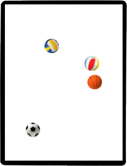
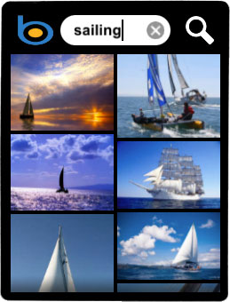
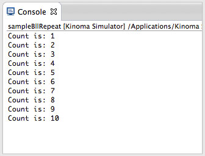
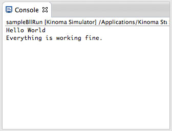
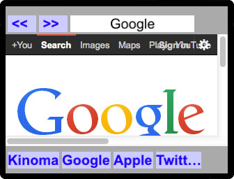
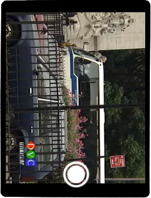

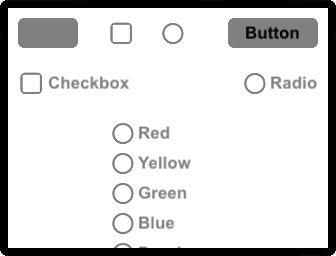
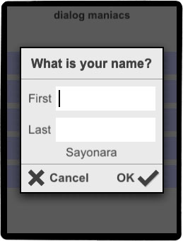
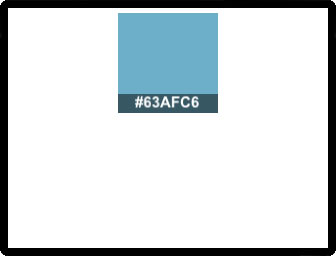
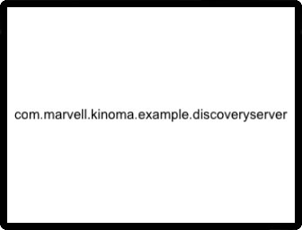
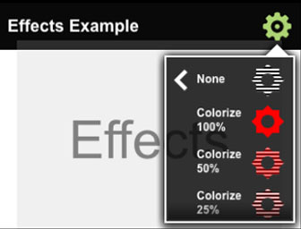
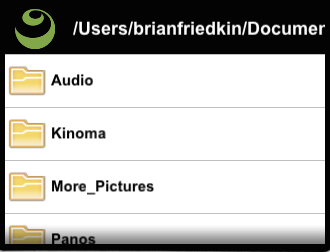
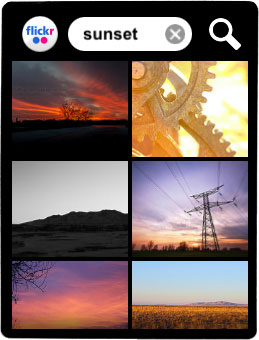
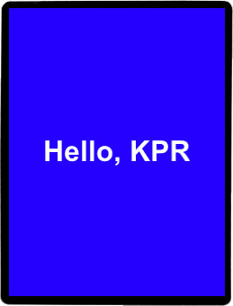
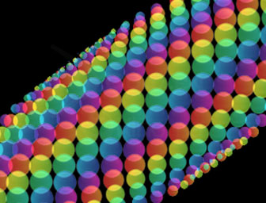
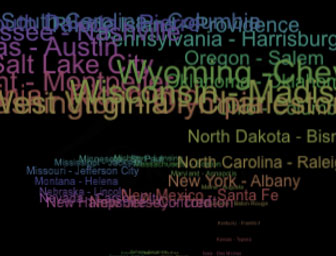
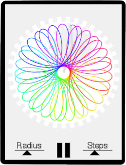
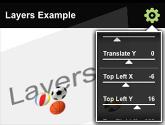


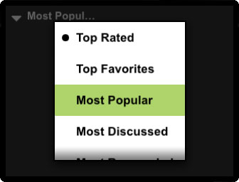
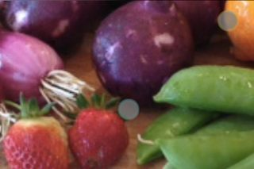
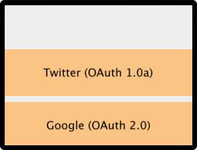
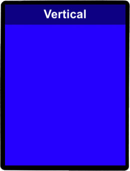
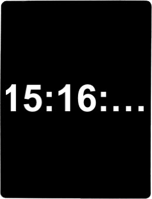
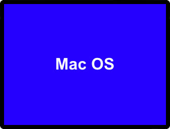

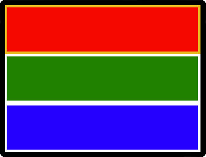
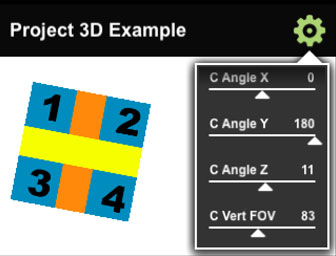
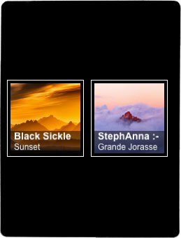
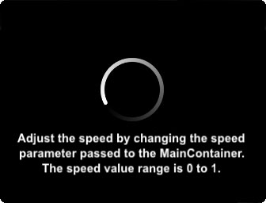
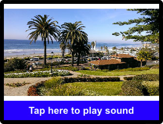
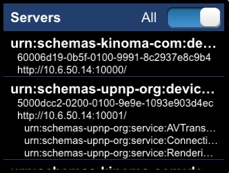
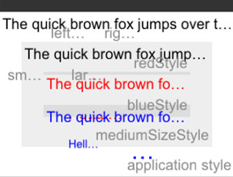


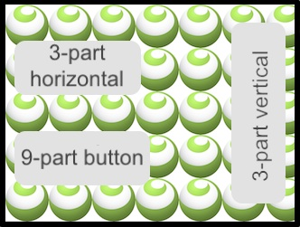
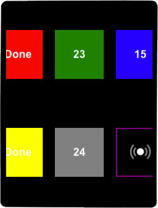
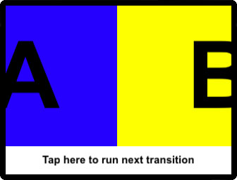
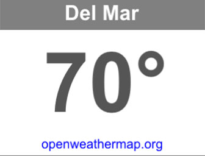
Copyright 2014 © Kinoma